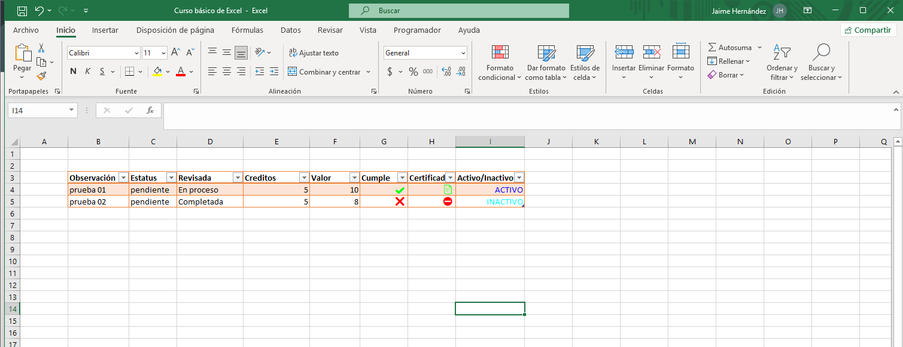

Curso de Excel aplicado a procesos administrativos y técnicos

Este curso está diseñado con base en necesidades reales detectadas en entornos laborales, enfocándose en la optimización de procesos administrativos, técnicos y de análisis de información mediante el uso de Microsoft Excel.
Objetivo del curso
Desarrollar en el participante las competencias necesarias para utilizar Excel de manera eficiente en la captura, análisis y automatización de información.
Diagnóstico de necesidades
- Uso limitado de funciones lógicas
- Dificultad en tablas dinámicas
- Falta de automatización
- Procesos manuales repetitivos
- Necesidad de dashboards
Estructura del curso
Módulo 1: Fundamentos
Organización de datos.
Módulo 2: Fórmulas
Funciones esenciales.
Módulo 3: Análisis
Tablas dinámicas.
Módulo 4: Dashboards
Visualización.
Módulo 5: Automatización
Macros.
Metodología
- Ejercicios guiados
- Casos reales
- Aprendizaje progresivo
Evaluación
- Ejercicios por módulo
- Proyecto final